概述
这项研究提出一种直接面向费米子量子计算的 LDPC 纠错方案，尝试减少费米子系统映射到量子比特时带来的额外开销，并通过模拟展示错误抑制效果。
研究概览
很多量子模拟任务本来研究的是费米子系统，例如电子在材料中的运动。但现有量子计算机通常以量子比特为基本单元，研究者需要先把费米子问题转换成量子比特问题，这一步会引入额外资源消耗。本文关注的是另一条路线：能否让容错量子计算更直接地在费米子编码上工作。
核心思路
论文提出了费米子到费米子的低密度奇偶校验码方案。直观地说，它把费米子 LDPC 码作为信息存储结构，再把状态转移到费米子 color code 处理器上执行逻辑操作。作者还给出寻找奇权重逻辑 Majorana 算符的算法，并讨论用费米子 lattice surgery 完成状态转移的方法。数值例子显示，相关编码率可以接近量子比特码，同时逻辑失败率能明显低于物理错误率。
术语介绍
- 费米子
- 电子等物质粒子所属的一类量子对象，许多材料和化学体系的模拟都需要处理费米子规律。
- LDPC 码
- 低密度奇偶校验码，特点是每个校验只关联少量变量，适合构造可扩展的纠错结构。
- Majorana 算符
- 描述费米子自由度的一种数学对象，在费米子编码和拓扑量子信息中经常出现。
- Lattice surgery
- 通过切分、合并编码区域来转移或组合量子信息的一类容错操作思想。
后续展望
这类方案把纠错码设计、费米子物理系统模拟和容错操作放到同一个框架里考虑。后续可以继续比较不同费米子编码在真实噪声模型下的表现，优化状态转移过程，并探索它们与具体量子硬件架构之间的匹配方式。
论文图片
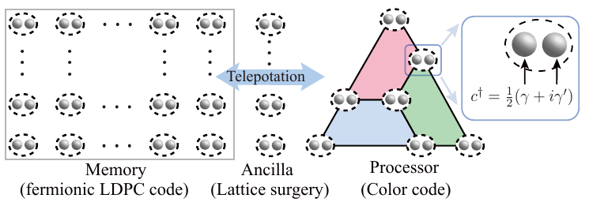
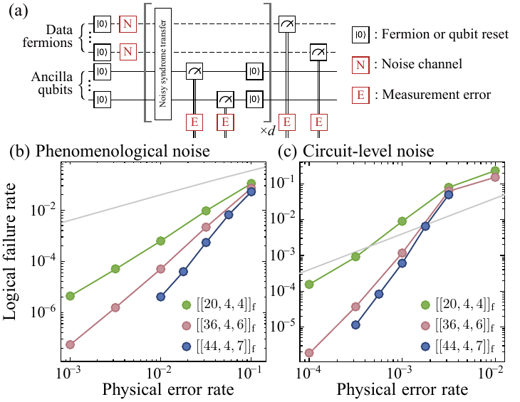
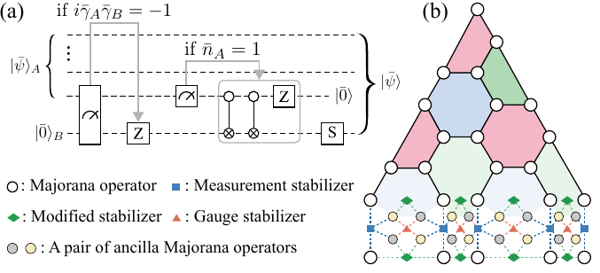
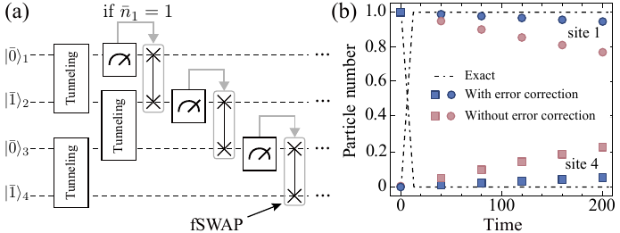
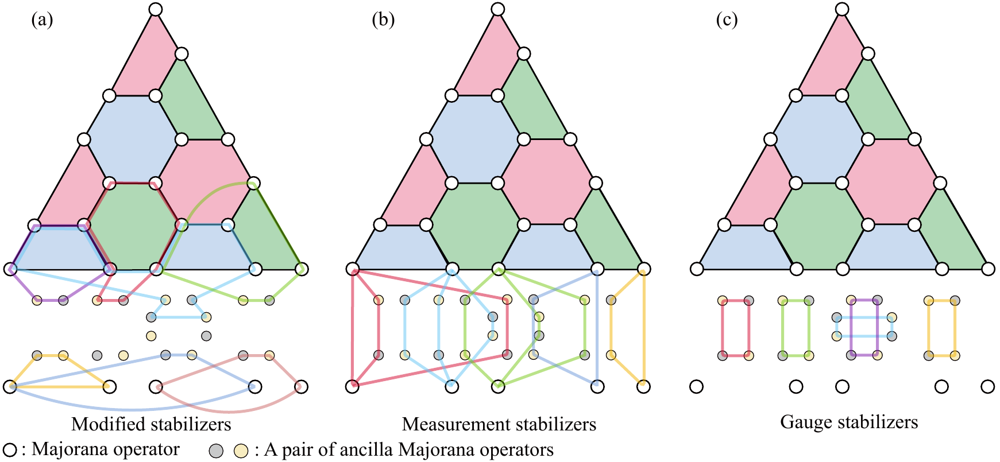
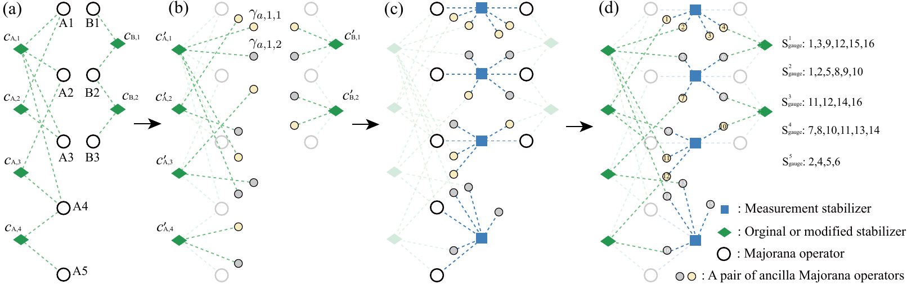
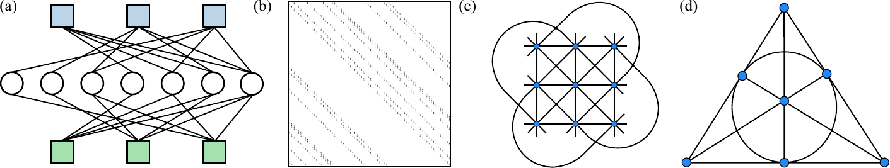
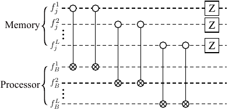
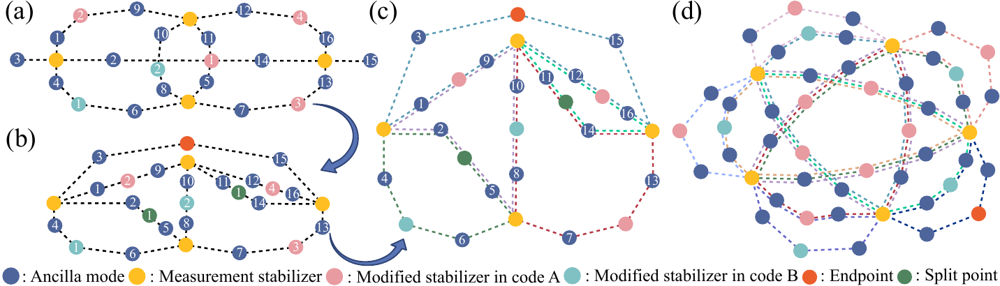
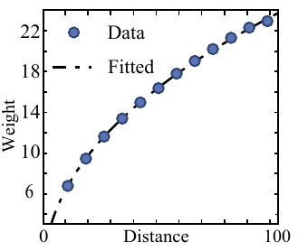
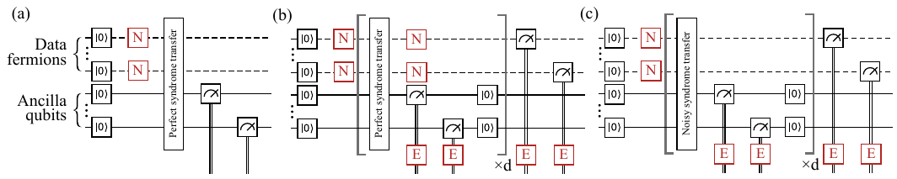
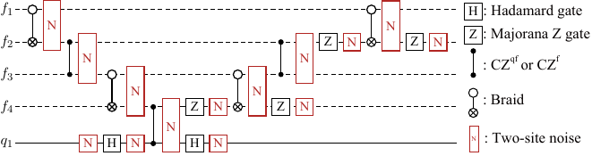
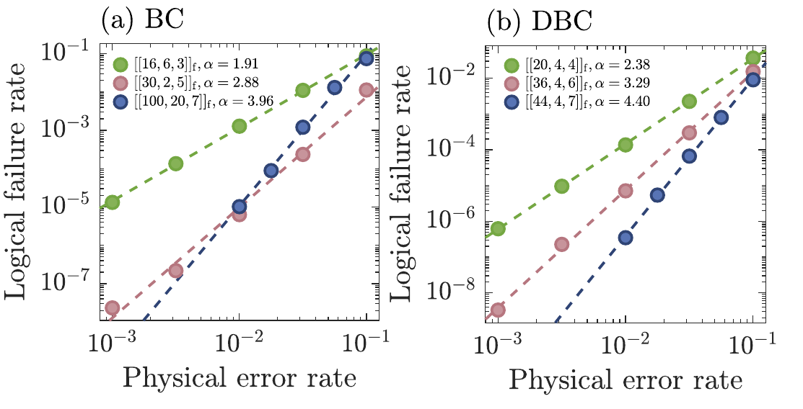
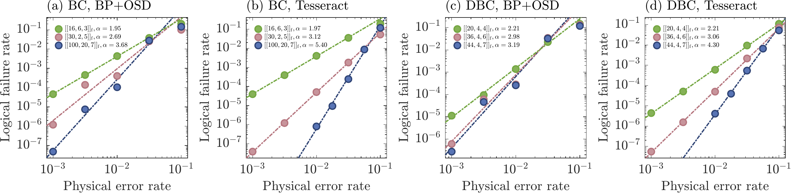
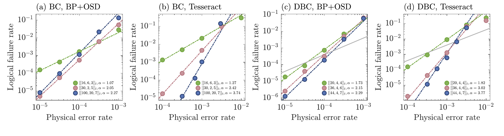
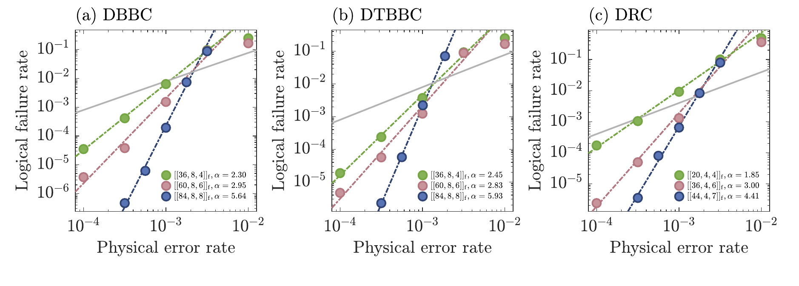
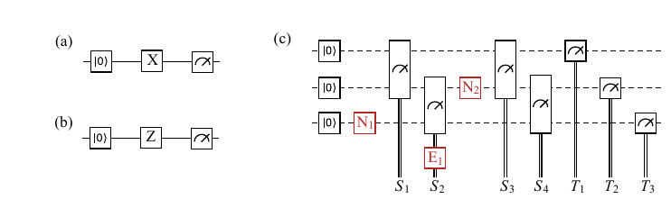
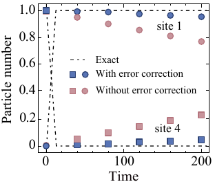
1 / 18